Archives : 2007-01
黑色里的安全感 @ Jan 31, 2007
接连两天被不同人问到同样的问题：“你好多衣服都是黑色的...这么喜欢黑色吗？”
好象是的，不知不觉拥有很多黑色衣服，黑色里我感到安全和沉淀。
从何时开始对黑色积累了这种不自觉地倾向？

疯狂家务 @ Jan 31, 2007
昨天下班之后简直是疯狂家务地开始。
18：00，到小区对面的超市买拖布等洗涤用品。
19：00，到家开始做饭。红烧一条鳊鱼；大肉圆、鲜蘑菇烧青菜；胡萝卜、土豆丝炒青椒；凉拌黄瓜；西红柿、鸡蛋、豆瓣汤。
21：30，收拾餐后残局，突然发现消毒柜碗橱里的餐具不太干净，也统统搬出来洗...
23：45，结束所有家务。腰已经酸到...弯下来才舒服。带了围裙，可下班后没换衣服，头发、毛衣和裙子满是油烟味。我一同事的太太结婚前就声明不下厨房，说烹饪的油烟对皮肤有损害。
今天和一同事讲到昨晚的疯狂家务，她惊讶地说：“啊，你会做饭啊？”她的大惊小怪又一次让我看到人们处处可见的惯性思维，习惯通过表象对事物进行判断和认知，也是恋爱的女人最易犯的错。我的家务能力在家族范围内可是有口碑的，况且也没有做家务戴着手套的矫情份儿。不过我妈妈说我要么不做家务，做起来比他们做得都好。
大概家务和工作一样给人枯燥乏味的印象，然而感受可以改变。上周推荐新品，拍了一些产品图片，编辑好打包发给同事们，立刻接到同事称赞的电话...带着热情工作，会略显那么一点点不同。家务亦如此，换了新家具，新内饰，会经常欣赏，并变幻摆放出好看摸样。家庭卫生也有助愉悦心情。
生活本是枯燥，得靠自己使其多些色彩和乐趣。
哇，手动档汽车 @ Jan 30, 2007
自己的车送去修，借了别人的手动档车上班。从驾校出来几乎没开过手动档，不过好象学会了自行车，永远都忘不掉。路上常会熄火，有次坡道起步，车子往后倒溜，想起教练教的，半联动加油门，试了几次成功了。只要驾驶时不慌张，问题不会太大。虽然不能体现速度与激情，还是有信心开好手动档汽车。
mini摩托车 @ Jan 29, 2007
中午出去吃饭看见这款非常迷你的摩托车，立刻掏出手机拍下来。
车主说这款车的价格为CNY5800，90年代中期我一个同学有一辆这样的摩托车，那同学1.8M以上的个头，骑在上面有点滑稽。
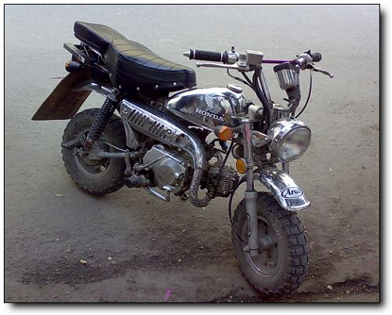
手机拍摄 @ Jan 26, 2007
用新手机拍摄了两张照片，咿...脸好象挺瘦的：)

计划旅行 @ Jan 26, 2007
准备做春节去国外的旅行计划，偶尔发现一个网站，介绍他们欧洲旅行的日记，文字暂且不谈，照片和网站设计足以让人羡慕妒忌。粗略看了之后判断男孩喜欢摄影，照片拍得...让人羡慕妒忌，网站静谧幸福的氛围象朵山涧小花静静开放，我惟有深深的呼吸，呼吸，再呼吸......那女孩嫁得真好！不过嫁得好不如自己独立的好。
现在国人去欧美旅行已经不是难事，到了寒暑假从小学到大学，只要花个两三万人民币就可以参加学校组织的欧美旅行。德国对北京和上海开放旅游签证，相比商务签证来得更为快捷。整个旅行结束后能象那个网站一样做一遍梳理归纳并分享，是件挺美的事儿。可是如果我们的恋人或伴侣不是摄影师、IT技师，这项工作很难完成。以前大哥曾督促我学习建立和管理网站，这方面不独立总是缺憾。上次欧洲旅行，只是粗略体会和感受，如果来得及能顺利前往会考虑购买一只canon防抖镜头。
梦.血 @ Jan 26, 2007
做了让我难忘的梦。
穿了白色的皮草外套，不知什么时候上面沾染着许多血迹。
那是自己身体里的血...哗哗的流出来。
梦见他的exGF和辞职的一个同事共同参加一个会议，问起我，找了他。
这两日睡眠不好，偏偏做梦的昨晚睡得很沉。
早晨上班迟到了。
真实统计 @ Jan 25, 2007
到了下班时间，明显感到眼睛酸痛，头疼，脑袋里塞得满满的。真想做个全身按摩，舒缓一下神经。
下班前和一个厂长的儿子聊了几句，那男孩大学毕业后在我们公司实习过半年，坐在我们办公室，我常指使他跑腿，现在人家是自家企业接班人，去年年底办完婚事，问他：“婚后感觉如何？”人家笑眯眯的说：“没什么不同。”
我：没有不同干吗结婚？
他：父母让结就结了。
我：你自己没有喜好？
他：我的喜好不带回家。
我：大学谈过恋爱吗？
他：谈过，说来话长。
我：为什么不和相爱的人结婚？
他：世界上80%相爱的人没能结婚。
我：根据你们班同学统计出来的？
他：是啊，我真的统计过...
我：男人为什么会这样？好象很轻松，为什么不和自己爱的人结婚？
他：一般小女孩才会对爱抱有幻想。
我：我虽然衰老可还是希望能拥有爱，女人一辈子都需要爱...
他：99%的人都是和不爱的人结婚的。
他的80%和99%的真实统计越发让我头疼，但我理解他的轻松是接受了他认为的现实。我该下班了，打开车窗，呼吸外面的空气，虽然污染严重，可比呆了一天的办公室要清爽许多。
态度&方式 @ Jan 25, 2007
传上这张快乐飞扬的图片调剂一下最近的情绪，我想我现在需要的是一次旅行，一个休假。春节....如果不作计划那么永远是为他人而过的节日！自我...是不是等同于自私？
近来文字中常能见到“态度”二字，“态度决定一切”、“有态度的都市生活”、“态度是一种女人”、“态度决定胜负”、“爱情态度”.....“态度比能力更重要”。亲戚家孩子智商正常，数理化成绩总是不理想，课堂上最认真的那个又是他，态度是否真能决定结果？过于渲染和粉饰的态度一定有虚假成份！借用高光光blog中评价《满城尽带黄金甲》的两句：“是不是人没有感情就要虚张声势来掩盖呢？没有了实际的内核，就需要用视觉效果来冲击观众...”
谈到旅游，有人问我为什么喜爱？能去自己向往的地方会兴奋，不同的风景人文，拍摄不同内容留下别样记忆，复印机下的生活暂时被改变了。他说：“那些照片你已经看了几十遍了...”我无法解释一遍一遍又一遍百看不厌的原由，就好象有人每天习惯性抽几支乃至几十支烟。有些人的兴奋感与压力消解在办公室、酒吧和运动场或是阅读、影音和性爱中，这应是方式范畴了？
合作态度一致，方式不同，结果是否是所期望的那样？

帮人遛狗 @ Jan 24, 2007
广播里讲现在有帮人遛狗的工作，如果现在退休在家我倒是挺有兴趣的。
Spyker（世爵） @ Jan 23, 2007
《本能2》一开始凯瑟琳驾驶的那辆SPYKER（世爵）相信会给观者留下深刻印象。早前看过一部有关荷兰SPYKER制造商的介绍，仅有20几个员工，纯手工打造订购豪华跑车。拥有SPYKER汽车的人一般已经拥有宾力、法拉利等顶级跑车，可是这些车仍然不能满足他们的要求，SPYKER帮助他们圆了这个梦。“SPYKER”这个名字对于多数国人来说是极其陌生的，2004年，这家荷兰专业跑车生产商借第八届北京国际汽车工业展览会的契机，正式进入中国市场。中国成都汽车博物馆里目前就有一辆黑色SPYKER收藏。
作为历史超过百年的老厂，一直保持着品牌独特的风格。他们生产的跑车全部为手工打造，具有独特的轻量化车身，采用大排量中置发动机，后轮驱动，多项指标采用F1标准，拥有惊人的性能参数。戏剧性的是它的历史虽然跨越了百年，但是中间却有75年的断层，这是被人称其为“惊世未了缘”的原因。
2004年5月，世爵通过IPO（首次公开发行）的方式上市，5月27日，世爵进入阿姆斯特丹证券交易市场Euronext Amsterdam（股票代码 SPYKER），募集资金1150万欧元，将主要用于提高产能和开拓新市场。此次世爵汽车股份公司（前身为世爵国际汽车控股有限公司）的上市，成为荷兰近3年多来首家IPO的公司。新生的世爵公司和汽车都继承老辈世爵的优良传统，出色的工匠们仍像他们的前辈那样手工打造每一辆汽车， 而且所使用的原材料绝对都是按顾客要求预先订制的全球最优质最独特的材料。如今的新世爵公司旗下共有5款车型，分别是C8 SPYDER, C8 SPYDER T, C8 Laviolette, C8 DOUBLE 12S和C8 DOUBLE 12R。外形上差异不大的它们，每一款都是产量极少的手工打造精品，价格可以高达900万人民币，成为跑车界中独一无二的精品。
第三代马自达MX-5，激动~ @ Jan 22, 2007
新款马自达MX-5硬质顶棚双门跑车将在英国首发，该车型又登上了第九届北京国际车展（Auto China 2006)的展台，实现它在中国的首次亮相。汽车杂志上介绍2005年第三代MX-5车型的全新改版车预计2007年年初进军中国市场，售价在33万人民币。看到这个消息后我的心情无比激动！这款车采用了独一无二的全球首款电动伸缩式硬顶，这种设计完全不会占用后备箱的有限空间。


新款型名称在各地区市场各有不同：
日本：Mazda Roadster Power Retractable Hard Top；
欧洲：Mazda MX-5 Roadster Coupe；
北美：MX-5 (Miata) Power Retractable Hard Top。
马自达于2006年年底发布了一款MX-5专门针对日本国内市场。该车被命名为MX-5 Blaze版，专配了多款特别内饰和外饰。MX-5 Blaze版跑车配置了特别装置，包括：合金铸造BBS车轮、特别版车标、转弯信号、铬合金外饰、铝车舱以及浅褐色皮革内饰。


第三代MX-5在业界同样获得了众多尊贵荣誉，其中包括日本2005－2006年度最佳车型奖、澳大利亚《Wheels》杂志评出的2005年度车型奖、英国广播公司（BBC）旗下著名汽车杂志《Top Gear》评出的2005年度最佳跑车奖、美国《Car and Driver Magazine》杂志评出的2006年十大最佳车型之一和2006年世界最佳车型奖的三个最有竞争力候选车型之一等等。
马自达MX-5三折式电动硬顶敞篷设计，打着12秒内完成开启或收纳的快速，在欧洲为了要让消费者更了解所谓12秒这件事，用网站让网友自己制造小型电影“12 second thriller ”，让你制作12秒的恐怖电影，提供你四种场景，四个别具特色的配角；场景分别是默片场景、美国西部场景、中国武术场景及音乐剧场景，配角分别是外星人、鲨鱼、黑客任务男主角─Leo及殭尸，你可以利用这些场景组合出16组小电影。
全新的MX-5 Roadster Coupe，依照动力引擎与变速系统的不同，共有三种配置，分别为1.8升五速手排、2.0升五速手排与2.0升跑车版六速手档。欧洲马自达建议售价英镑1.821万元起售。
下面是06年夏天在塞班租的马自达MX-5的车：


炼铁人生 @ Jan 22, 2007
看到yucheng的MSN签名：“生命需要千锤百炼才有质量”，我立刻听到叮叮砰砰砸铁的声音，人生就是大炼钢铁？！
《Clerks I》1994 @ Jan 22, 2007
在《Clerks II》推出之后，必须赶紧看完早已购买的94版的《Clerks I》，想要推荐的理由是电影的对白，一时想不出有哪部电影有如此多且精彩的台词。黑白色彩让影片区别于随大流的表现形式。《Clerks I》绝对是个另类的成功例子。
1994年，24岁的导演凯文·史密斯通过卖掉自己的漫画收藏的钱，加上信用卡和向亲朋好友借来的钱，用16mm的黑白胶片，对白采用现场录音，在自己打工五年的便利店里，邀请自己的工作伙伴作为演员和幕后班底，加上自己、老婆、老妈和好友倾力加盟，拍出了一部令美国青年为之疯狂的另类黑白喜剧片。凯文·史密斯在影片中饰演小店门口卖毒品的Bob，整部电影中没有一句台词，被称为“silent Bob”。这部投资仅2万7千美元的喜剧片，获得了当年的圣丹斯电影节大奖，戛纳的青年评论奖，并在英国权威电影杂志《TOTAL FILM》评选出的50部最伟大的喜剧电影中列NO.16。
IMDB评分高达7.9的《Clerks I》，也被美国许多年青人作为Cult经典追捧多年。片中对于奇怪顾客性事八卦毫无禁忌的露骨调侃，对于多部当红影片的正反两面辩论，以及对于自己人生的自嘲，全片中占90%的这些粗俗尖刻，奇思怪想却又隐含深刻的对白，在令人喷饭不已的同时，也让观者体会到那一代的不少美国青年在不思进取，自甘堕落的同时，却又自以为是，眼高于顶的矛盾心态。
导演凯文·史密斯自1994年传奇式成功之后，一跃成为好莱坞最炙手可热的独立电影人，往后他的作品虽然屈指可数，但《耍酷一族》（Mallrats）、《猜·情·寻》（Chasing Amy）和《怒犯天条》（Dogma），三部片在IMDB评分最低为7.1，口碑甚佳并且意外地阶梯式捧红了一代英俊小生本·阿弗莱克。后来他除了《新泽西爱未眠》（Jersey Girl）后便再无大荧幕作品。此番的《Clerks II》，说它不是导演的野心之作，恐怕也没有人会相信吧。
我的新伙伴@sony psp @ Jan 17, 2007
近日购进白色sony psp，2G卡。
新出色款有银灰和宝蓝色。背面皆为光面，还是喜欢亚光磨砂处理，所以挑了白色。计划中的粉红色，实物效果实在不敢苟同。另外配了款双层便携牛津包，除了装入PSP之外，其它配件均可装入，方便出差旅行时携带。PSP可以读书、玩游戏、看电影、养宠物、听音乐、下载照片，2007年从电子生活开始！

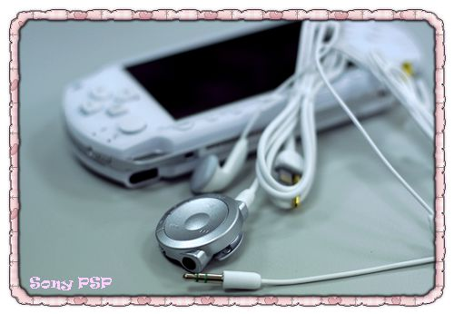
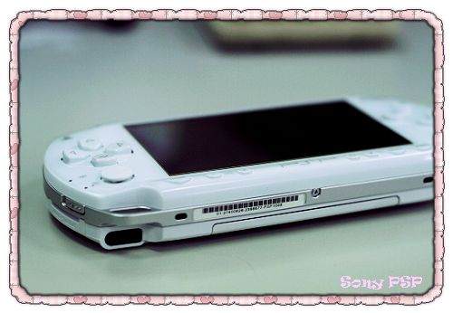

你pay我pay @ Jan 17, 2007
每晚睡前会阅读一会儿新买的书，大约看了20多页就郁闷了，想不到美国人是这样的！作者给我的写作印象有点我姐姐那个年龄层的风格，也有youzi的留言特点：)书中描述美国人的AA制简直让人瞠目结舌。。。。。。
**一家人聚餐各付各的钱；
**A请B吃饭，B带了C去，A付款时只付两份儿即A和B的，C那份儿自己pay；
**夫妻长夜裸睡，海枯石烂，丈夫温情款款...超市买完东西结帐，美国丈夫pay完自己的东西，剩下中国太太床头的一只灯泡由她自己pay；
**某老太太大寿邀请一群朋友庆祝，邀请函上注明餐费自理；
**邀请朋友去酒吧聚会，卡片上写着酒水自理，去了后只提供干果谷类等零食，吃的口干舌躁时纷纷自己掏钱买饮料喝；
。。。。。。今天我用句号来强调省略号以表达我的惊讶与不解。
回想2003年与美国人John结伴背包云南旅行，人家买了白族同胞的炸土豆津津有味站在我边上吃，好象我不存在似的；翻山越岭你不求助人家不会主动搀扶，人家说那是尊重女性权利@_@那段旅行留在记忆深处的就是每天算帐。象我这等女中豪杰，在pay上基本不把自己放在弱者位置，甚至还会抢着pay。。。这不仅符合美国文化，还有超越之势，可是。。。可是。。。我会很计较一只灯泡的问题。国内大多女人怀有小鸟那个依人的柔情，在这里女人活得弱至少能赢得同情，还是中国女人聪明！
来自youzi的信息 @ Jan 16, 2007
去看了DETROIT AUTO SHOW，上次去DETROIT AUTO SHOW 是两年前，今年的AUTO SHOW 明显感到高科技的手段多了，巨大的显示屏幕震耳欲聋的音响，还有各种仿真的驾驶体验，除了高档豪华车，如LAMBORGHINI，FERRARI，ROLLS-ROYCE，BENTLEY，还有很多大众品牌的汽车，无论是MERCEDES，PORSCHE等大众豪华汽车，还是FORD，TOYOTA，GM。。普通汽车都可以坐上去体验一下。
还有一个感受就是亚洲人很多，也知道是中国人，日本人，还是韩国人，吃饭的时候碰到两个女孩说中文，和她们聊了几句才知道她们是东北一家汽车杂志的记者，国内记者和业界就来了50多人。
个性十足的JEEP ($30,000)

体验驾驶MERCEDES跑车的感觉 ($100，000)，这辈子应该有希望买的起
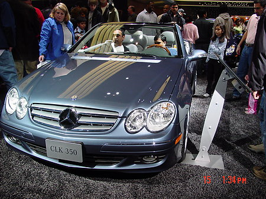
PORSCH 的SUV
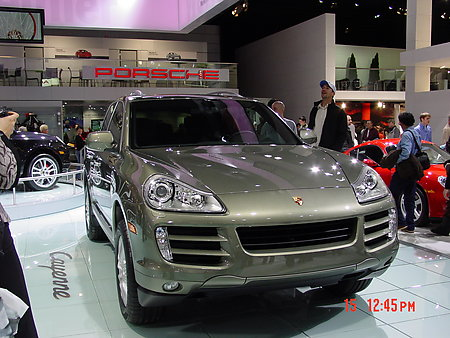
LAMBORGHINI ($400，000)
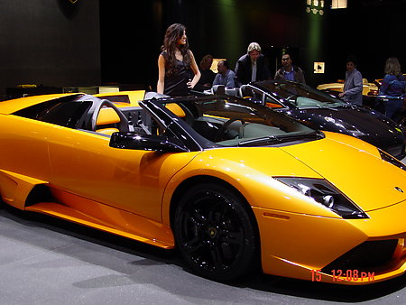
BENTLEY ($220,000)

新手机@Nokia 7390 @ Jan 16, 2007
收到Angie从上海帮偶购买的Nokia 7390 ，因为南京水货市场没有这款手机。感叹：还是大城市好！之前曾考虑过Nokia N72、N73，N72塑料感太重，一圈金属条过于突兀。N73键盘小，材料手感单薄，智能手机容易死机。7390是8倍数码变焦兼自动聚焦功能，300万像素，最大可拍摄2048×1536分辨率的图片，这是吸引我的最主要因素。手机3G功能目前国内还是个摆设，花多余的钱就为了放在那里储备到花儿谢了。有朋友说：“7390黑铜色不是很女性化，蛮中性的。”偶受到7390浅粉色的百般诱惑终究还是选择了耐脏的深色。黑色表面磨砂亚光，没有那种廉价的塑料感，让人欣慰。Nokia的吝啬之处在于永远标配1块电池、1个旅行充电器，永远没有电脑数据线，NND~~偶是Nokia品牌拥护者，除此之外就是使用习惯让偶一直对它偏爱，么办法！
苹果的iPhone国外上市时间是2007年6月，对于iPhone的唯一顾虑是电量持续使用时间，这款从外型到功能都超眩的手机会是很多手机玩家的不二选择。价格还算合理，4G的USD500，8G的USD600，一旦国内销售估计价格上还会多出15%~20%的银子，或许不止。这个畸形的消费市场什么事情都可能发生！买东西有时是心情有时是心跳。偶曾电话咨询过10086，iPHONE的GSM制式国内可以使用。不过要等最先购买的“小白鼠们”的实验结果才能确定其优劣。
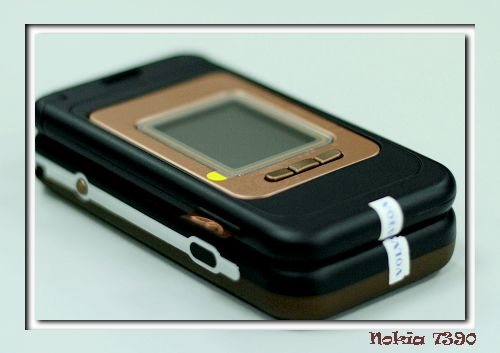

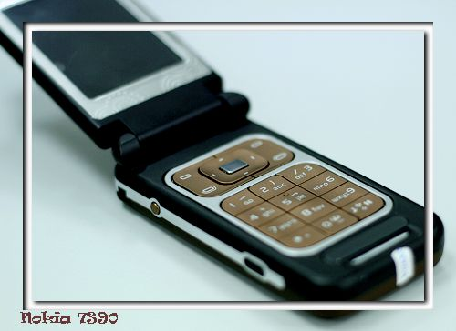
喜欢美食 @ Jan 15, 2007
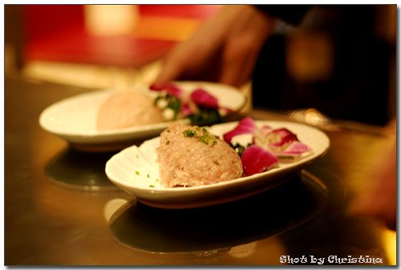

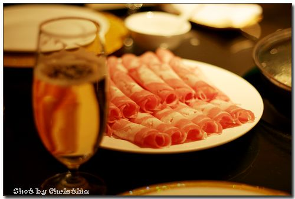
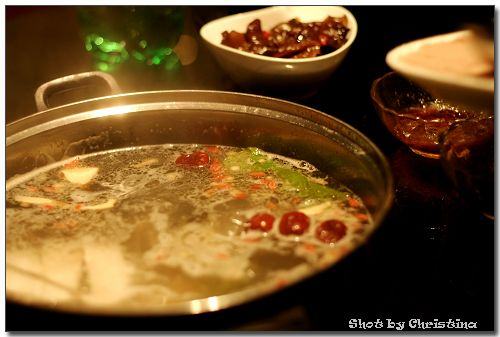
且行且珍惜-中国茶 @ Jan 15, 2007
在“六月的似水流年”blog的友情连接里看到一个名为“七月的中国茶” ，以为是博主为连接自己起的名儿，点开来看，是中国博客网上一个免费注册的blog，需要授权才能打开。虽然人家在中国茶前加了“七月”算作区别，但名字雷同得......据说中国有2000多万Blog用户，诺大的Blog世界怎么着也要允许人家雷同一下下吧，就好象撞衫的心理反应。人家可以将雷同的衣服或封存或送人或扔掉，而记录了将近5年的中国茶及一批又一批来了走走了又来的茶客们，是无法象撞衫的衣服一般处理掉的，今年4月是“中国茶”5岁生日，曾用域名：
christina.eqiao.com
christina.devbeez.com
christina.bizbeez.com
christina.tecinese.com/tecinese.com
lifetea.org
网络上也许还会出现8月、9月亦或是10月中国茶，这都不是问题，只希望中国茶继续一直记录，且行且珍惜！
B.O.O.K @ Jan 15, 2007
周末逛书店，太多的书让人无从下手。
最后挑了本中美文化差异方面的书，不晓得为什么挑这本书，或许是好奇心的缘故吧...“好奇害死猫”？太奇怪的名字，还没看过这部电影！
Live，just as a pig！
周末生活总结。
99个法则，简单也变得不简单了。

很喜欢《华为真相》这张PP，可惜画面虚了，555~~~

我也不知道自己多久没感动过了，生活仿佛处于停滞不前的状态。

南京火车站 @ Jan 12, 2007


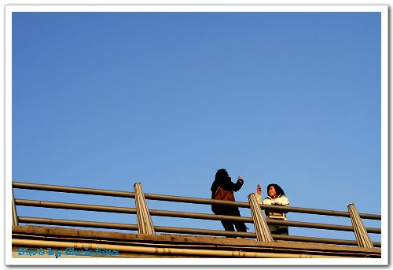
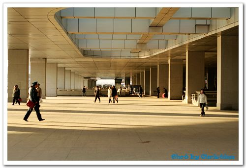

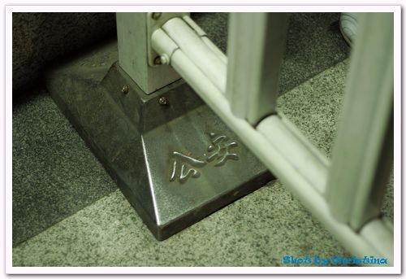


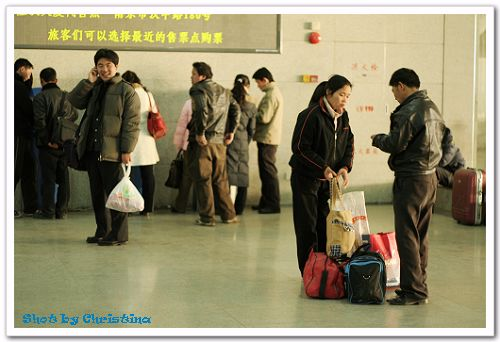
百米冲刺去上班 @ Jan 10, 2007
因为赶时间上班，破费了我很多米。
其一：收到八大队电话，告诉我非现场超速50%，叫我尽快去报到处理。电话中说超度20%以下罚50米，20%~50%罚款200米。可我印象中一个朋友在高速上超速曾经被罚款2000的啊....暗吸一口凉气，这次算幸运的了。
其二：今早晨下车库，为了从人家前面快点过去，顺着边儿下的。中午发现左前胎已经完全着落，摸样悲惨呐！4S店小伙儿10分钟内赶到，穿着干净的锈着车标的连体工作服，动作麻利地10分钟换好胎，令我暗自欣慰买车的同时还买到了专业的服务，换胎....完全免费。不过打听了下更换外胎的费用要700米。先将这个坏胎放在后备箱里再说吧！
水煮鱼片米线 @ Jan 10, 2007
这是昨天中午的午饭。因为想要吃鸭脖子，下班后开车出去，本想去湖南路美食一条街买久久鸭，鉴于中午休息时间短，就在夫子庙觅食啦。周末吃了太多甜食，恨不能吃口盐，周一的午饭更是想吃咸的辣的。
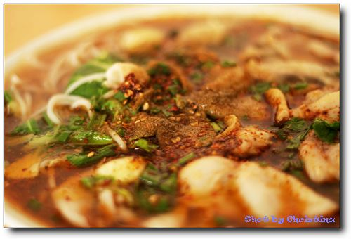
梦见 @ Jan 09, 2007
做梦了。
***梦见南京市场可以买到NOKIA7379，于是准备打电话告诉姿不用帮我在上海买。
***梦见17年前的好朋友琳，她现在某警备司令部，见到她的时候我冲上去紧紧拥抱她，并克制不住的哭起来。
***梦见自己左手掌上扎满了荆棘上的刺，穿进皮肤里，被我一根一根拔出来。
做梦前我在看《蜡笔小新》，看着看着便睡着了。
无限黑暗和光亮 @ Jan 08, 2007
他常说我情商低，并一直担心我分不清真伪，感情的...信息的...我已不是二八年华中幼稚女子，分不清楚一张严肃、认真布满真诚的表情下掩藏着的真正目的。当某些东西曾经被一层层剥开，某些人便经不起推敲，一切的虚假，然而可以虚假的理直气壮！生活对于某些人就是一场给他人观摩的表演。此时...淡然笑之...并遵循上帝旨意让其继续丑陋的表演...
周末阳光格外好，冬天的阳光似乎总是伴着寒风，江南的寒风又极为透骨的凉。我拍下这些光线中的心情，作为对过去这个温馨且沉浸的周末的纪念。


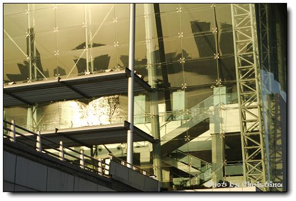

France&OJ @ Jan 05, 2007

新绿 @ Jan 04, 2007
办公桌上的小植物冒出新的绿叶，鲜嫩得可爱~让人愉快的新生~


时尚女魔头*The Devil Wears Prada @ Jan 04, 2007
Meryl Streep不愧是影片品质和票房的保证，早前看过两本杂志上均介绍这部电影。假期终于看到碟版。杂志上描述生活中的Meryl Streep其实不算时尚紧随潮流人士，也不通晓各个一流国际名牌。但是片中她饰演的《秀台》女主编却是时尚界的大姐大，洞悉一切有关时尚信息，N年前流行过什么都能说得一清二楚。饰演助理的Anne Hathaway曾在多部电影中出演主角，绝美的女孩子。虽在《断臂山》中演配角，但其火辣的身材让人印象深刻。想要在娱乐圈中混，形象很重要。这部电影让我兴奋的另一个原因是：时尚。其实我挺向往拥有一份与时尚相关的工作。那会让我充满热情！
有人说时尚不时尚不重要，重要的是身材，我看气质最重要。有的是衣服衬托人，有的是人衬托出衣服的光彩。一个思想寡薄、语言惨淡，气质粗俗的人即使穿着时尚，把名牌贴在脑门上又如何？时尚的东西可以改变外在形象，却很难改变张口的瞬间以及举手投足所透露出来的信息。可是谁都无法抵抗时尚带来的诱惑，时尚是否与奢侈品划等号？我看未必...
影片《时尚女魔头》(The Devil Wears Prada) 改编自同名畅销小说，原著作者劳伦·魏丝很大程度上在这部小说里在讲述自己曾经的亲身经历。她当年同样在大学毕业之后，便进入了美国著名的时尚杂志《Vogue》编辑部中担任主编助理，经过一年的工作“磨砺”之后辞职。随即便写出了这部关于自己工作经历的小说。在书中，她毫不隐讳了描写了自己所受到的种种不公正待遇，而书中写道的那个号称来自地狱的老板的形象，亦是直指现实生活中的前《Vogue》主编安娜·薇托尔。其实，普通人对于名人富豪的奢华生活总是存有猎奇心理，因此，这本书一经上市就引起不小的轰动，取得了空前热卖的成绩。在《纽约时报》畅销书排行榜上一连持续了15个星期高居不下。如今，在曾经炮制过热播剧集《欲望城市》与《兄弟连》的导演大卫·弗兰克之手，此书成了被搬上好莱坞大银幕的绝好题材之一……
元旦假期 @ Jan 04, 2007
假期从一号开始渐行渐快乐，三天假期不够饱满的完成自己的事情，贪恋放假的日子，开始喜欢逛装饰城了。整个假期没有人给我拍下一张清晰的照片，这世上有“铁手”吗？Canon防抖功能的镜头是不是真正能解决这个问题？2000年那会儿我在关注什么？现在发现有些动画片很好玩，看了几集《蜡笔小新》，不停发笑。小新最初给我的印象是有次公司组织到外地旅游，当时汽车上放的是《蜡笔小新》，一个经理上小学的儿子几乎能背下来所有小新的台词，连声音都学得很象，那时我特排斥这类片子，觉得弱。现在我却弱起来咯。

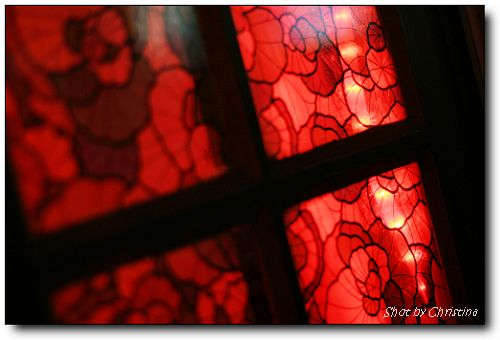
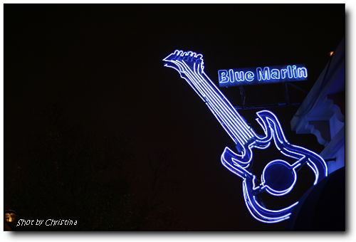

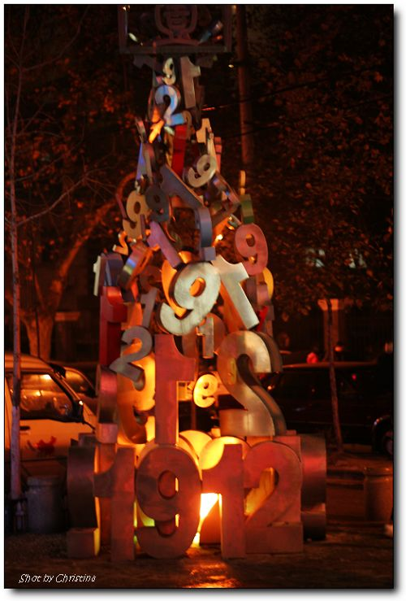


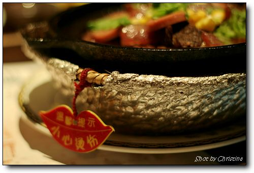

菊花台 @ Jan 01, 2007
2007,以一首忧伤的《菊花台》开始......

你的泪光柔弱中带伤
惨白的月儿弯弯固住过往
夜太漫长凝结成了霜
是谁在阁楼上冰冷地绝望
雨轻轻叹朱红色的窗
我依身在纸上被风吹乱
梦在远方化成一缕香
随风飘散你的模样
菊花灿烂地烧
你的笑容已泛黄
花落人断肠我心事静静躺
被风乱也微摇
你的影子剪不断
独留我孤单在湖面神伤
花已伤完飘落了灿烂
凋谢的市道上冥冥不堪
手摸独樵愁心拆两半
他已上不了爱一辈子摇晃
谁的江山马蹄声慌乱
我一身的戎装呼啸沧桑
天微微亮你轻声的叹
一夜惆怅如此委婉
菊花灿烂地烧你的笑容已泛黄
花落人断肠我心事静静躺
被风乱也微摇
你的影子剪不断
独留我孤单在湖面神伤
菊花灿烂地烧你的笑容已泛黄
花落人断肠我心事静静躺
被风乱也微摇
你的影子剪不断
独留我孤单在湖面神伤